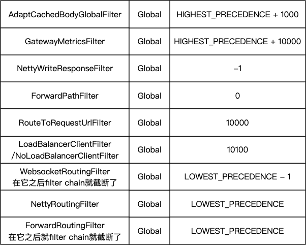
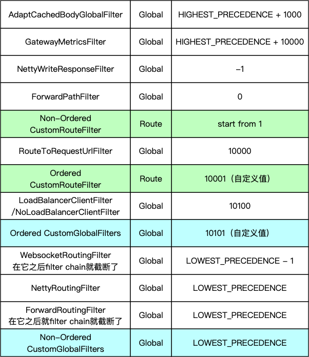
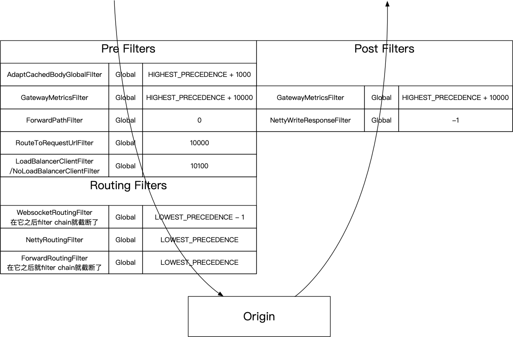

本文基于Spring Cloud Gateway 2.1.1.RELEASE。
在讲SCG的Filter的排序问题之前得先比较一下Spring Cloud Gateway在对待Filter的方面与Zuul2有着哪些不同。
Filter的Scope
- SCG采用的是Global Filter和Route Filter相结合的方式
- Zuul2则都是Global Filter
SCG所谓Route Filter就是像下面这样的：
spring:
cloud:
gateway:
routes:
- id: tomcat_route
uri: http://tomcat:8080
predicates:
- Path=/tomcat/docs
filters:
- StripPrefix=1
- RemoveRequestHeader=X-Request-Foo上面的StripPrefix和RemoveRequestHeader就是Route Filter，而SCG的Global Filter则是隐式的，无需显式配置，它们会在请求过来的时候被SCG调用。
也就是说你可以配置不同的Route，然后为每个Route配置不同的Route Filter，这一切都是在配置阶段就决定下来的。
而Zuul2则都是Global Filter，因此你得运行时在每个Filter内部自己决定是否要干活，除此之外，发送到Origin（被代理的服务）的url也得你自己设置，下面是一个例子（来自Zuul2 Sample）：
public class Routes extends HttpInboundSyncFilter {
@Override
public boolean shouldFilter(HttpRequestMessage httpRequestMessage) {
// ...
return true;
}
@Override
public HttpRequestMessage apply(HttpRequestMessage request) {
// ...
// Route healthchecks to the healthcheck endpoint.;
context.setEndpoint(ZuulEndPointRunner.PROXY_ENDPOINT_FILTER_NAME);
context.setRouteVIP("tomcat");
return request;
}
}Filter的角色
- 在SCG概念中只有一种Filter（撇开Global和Route的区别），它用代码来区分Pre Filter、Post Filter。在文档中还提到了Routing Filter，其实也是Pre Filter。
- Zuul2在代码中显示得提供了InboundFilter（负责进来的请求）、OutboundFilter（负责出去的响应）、ProxyEndpoint（负责请求到Origin，串起Inbound和Outbound）。
下面是SCG的Pre Filter（裁剪自官方例子12.2 Writing Custom GatewayFilter Factories）：
public class PreGatewayFilterFactory extends AbstractGatewayFilterFactory {
@Override
public GatewayFilter apply(Config config) {
return (exchange, chain) -> {
// business logic
return chain.filter();
};
}
}Post Filter的例子：
public class PostGatewayFilterFactory extends AbstractGatewayFilterFactory {
@Override
public GatewayFilter apply(Config config) {
return (exchange, chain) -> {
return chain.filter(exchange).then(/* business logic */);
};
}
}在Zuul2里，你则得分别实现HttpInboundSyncFilter和HttpOutboundSyncFilter，ProxyEndpoint不需要你自己实现。
SCG Filter的问题
SCG的优点很明显，它做了Zuul2不做的事情：
- 替你决定进来的请求转发到哪个Origin。在Zuul2里这个交给你自己来实现。
- 在配置上就决定了这个Route会应用哪些Filter。在Zuul2里这个交给你自己来判断。
但是随着对SCG的深入了解，发现了关于Filter的执行顺序存在一些坑，如果不了解清楚会容易出错。
Filter的排序
前面讲了，SCG在执行过程中Global Filter和Route Filter是一起执行的，那么它们的order是怎样的？
先来看看Global Filter，你可以访问/actuator/gateway/globalfilters（见文档）得到Global Filter的排序：

那么如果你写了一个自定义 Global Filter，那么它的order是什么呢？这个要看情况：
- 如果你的自定义Global Filter实现了
Ordered接口或者写了@Order注解，那么它的order就是它自己设定的值 - 否则，它就没有order
关于这点可以看FilteringWebHandler.java的源代码。
再来看看Route Filter，这也分两种情况：
- 如果RouteFilter实现了
Ordered接口或者写了@Order注解，那么它的order就是它自己设定的值。 - 否则，它的order则是从1开始，按照Route中定义的顺序依次排序。
关于这点可以看RouteDefinitionRouteLocator.java的源代码。
最后SCG把它们两个结合起来，做一个排序，对于没有order的Filter，它的order则默认为Ordered.LOWEST_PRECEDENCE。关于这点可以看FilteringWebHandler.java的源代码。
用一张图做总结：

Filter的执行顺序
先看SCG文档3. How It Works中的这张图：

这张图大概告诉你了SCG的调用过程，可以看到经过了一堆Filters，但是并没有告诉你Filter的执行顺序。然后在SCG的6.1 Combined Global Filter and GatewayFilter Ordering提到了：
As Spring Cloud Gateway distinguishes between “pre” and “post” phases for filter logic execution (see: How It Works), the filter with the highest precedence will be the first in the “pre”-phase and the last in the “post”-phase.
也就是说意思如果这个Filter是Pre Filter，那么执行顺序和排序顺序相同，如果这个Filter是Post Filter则执行顺序和排序顺序相反。我整理了一下SCG自带GlobalFilter的执行顺序：

可以看到GatewayMetricsFilter既是Pre Filter也是Post Filter。
总结
- 执行某个Route的时候，SCG会将Global Filter和Route Filter结合起来并排序：
- 没有给order的Global Filter则保持order为null去排序
- 没有给order的Route Filter的order则从1开始，根据Route中定义的顺序给值
- 排序逻辑见AnnotationAwareOrderComparator
- 对于Pre Filter，执行顺序同排序顺序
- 对于Post Filter，执行顺序与排序顺序相反
- 如果你要自定义Global Filter，那么一般来说：
- 自定义的Global Pre Filter要在Routing Filter之前执行
- 自定义的Global Post Filter要在Routing Filter之后执行或者NettyWriteResponseFilter之后执行
- 如果你要自定义Route Filter，那么一般来说：
- 自定义Route Pre Filter要在
ForwardPathFilter和RouteToRequestUrlFilter之间，而且不需要实现Ordered接口或添加@Order注解 - 自定义的Route Post Filter比较少见，放在Routing Filter或者NettyWriteResponseFilter之后执行
- 自定义Route Pre Filter要在